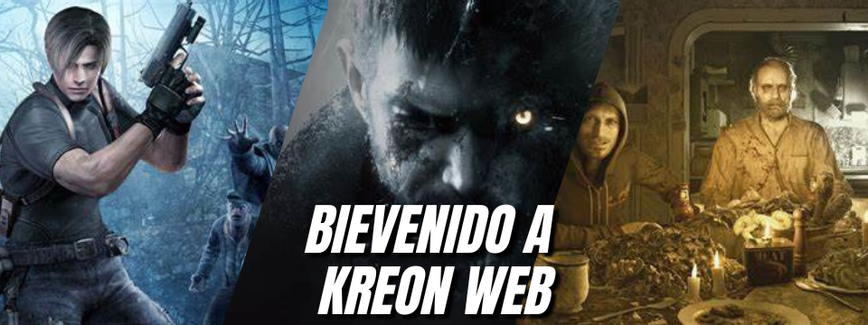

Ultimo Video
Tremendo, Eliminaron a personajes de del Remake de Resident Evil 4, aun asi gracias a las filtraciones sabemos muchas otras cosas mas que nos deparan en este tremendo juego!!!
Ver MasTremendo, Eliminaron a personajes de del Remake de Resident Evil 4, aun asi gracias a las filtraciones sabemos muchas otras cosas mas que nos deparan en este tremendo juego!!!
Ver Mas